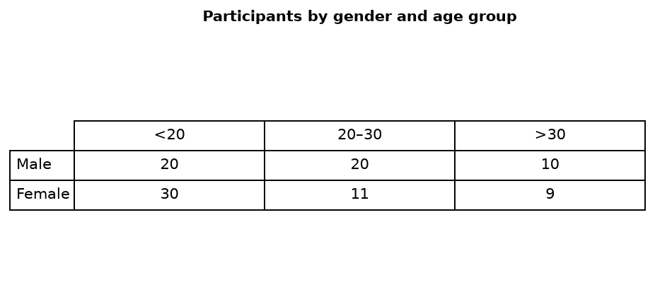

1.2 静态图 · 解题步 ③
数据分析 — 配对 + 找联系
最值 / 相似 / 相差 / 倍数；尽量将全部数据相互关联。
分析方法
配对 + 找联系： 最值 · 相似 · 相差 · 倍数
批注（红）：
- 尽量将全部数据相互关联，体现分析紧密性
- 要有具体数字！
笔记例题（接步 ② 表格）

男段（主 1 段）
在男中，<20 岁的与 20~30 岁相等为 20 人，为 >30 岁的 2 倍（10 人）。
女段（主 2 段）
在女中，<20 岁最多为 30 人；20~30 岁的与 >30 岁的相似，分别为 11 和 9 人。